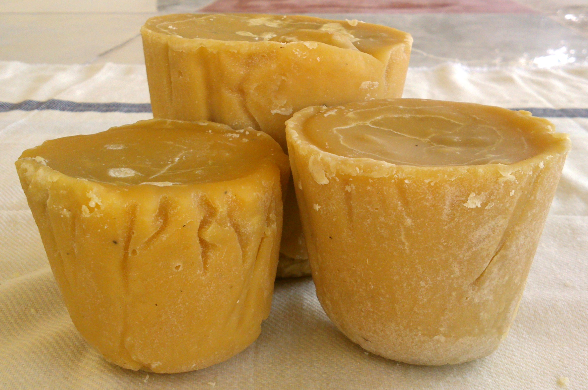

गुड के औषधीय गुण -------
______________________________________________________
गुड़ गन्ने से तैयार एक शुद्ध, अपरिष्कृत पूरी चीनी है।
यह खनिज और विटामिन है जो मूल रूप से गन्ने के रस
में ही मौजूद हैं। यह प्राकृतिक होता है। पर लिए ज़रूरी है
की देशी गुड लिया जाए , जिसके रंग साफ़ करने में
सोडा या अन्य केमिकल ना हो। यह थोड़े गहरे रंग का होगा।इसे चीनी का शुद्धतम रूप माना जाता है। गुड़
का उपयोग मूलतः दक्षिण एशिया मे किया जाता है।
भारत के ग्रामीण इलाकों मे गुड़ का उपयोग चीनी के स्थान
पर किया जाता है। गुड़ लोहतत्व का एक प्रमुख स्रोत है
और रक्ताल्पता (एनीमिया) के शिकार
व्यक्ति को चीनी के स्थान पर इसके सेवन की सलाह दी जाती है। आयुर्वेदिक चिकित्सा के अनुसार गुड़
का उपभोग गले और फेफड़ों के संक्रमण के उपचार में
लाभदायक होता है।
- देशी गुड़ प्राकृतिक रुप से तैयार किया जाता है
तथा कोई रसायन इसके प्रसंस्करण के लिए उपयोग
नहीं किया जाता है, जिससे इसे अपने मूल गुण को नहीं खोना पड़ता है, इसलिए यह लवण जैसे महत्वपूर्ण
खनिज से युक्त होता है।
- गुड़ सुक्रोज और ग्लूकोज जो शरीर के स्वस्थ संचालन
के लिए आवश्यक खनिज और विटामिन का एक
अच्छा स्रोत है।
- गुड़ मैग्नीशियम का भी एक अच्छा स्रोत है जिससे मांसपेशियों, नसों और रक्त वाहिकाओं को थकान से
राहत मिलती है।
- गुड़ सोडियम की कम मात्रा के साथ-साथ पोटेशियम
का भी एक अच्छा स्रोत है, इससे रक्तचाप
को नियंत्रित बनाए रखने में मदद मिलती है।
- भोजन के बाद थोडा सा गुड खा ले ; सारा भोजन अच्छे से और जल्दी पच जाएगा।
- गुड़ रक्तहीनता से पीड़ित लोगों के लिए बहुत
अच्छा है, क्योंकि यह लोहे का एक अच्छा स्रोत है यह
शरीर में हीमोग्लोबिन स्तर को बढाने में मदद करता है।
- यह सेलेनियम के साथ एक एंटीऑक्सीडेंट के रूप में कार्य
करता है। – गुड़ में मध्यम मात्रा में कैल्शियम, फास्फोरस और
जस्ता होता है जो बेहतर स्वास्थ्य को बनाए रखने में मदद
करता है।
- यह रक्त की शुद्धि में भी मदद करता है, पित्त
की आमवाती वेदनाओं और विकारों को रोकने के साथ
साथ गुड़ पीलिया के इलाज में भी मदद करता है। – गुड़ शरीर को विषाक्त पदार्थों से छुटकारा पाने में मदद
करता है। सर्दियों में, यह शरीर के तापमान
को विनियमित करने में मदद करता है।
- यह खांसी, दमा, अपच, माइग्रेन, थकान व इसी तरह
की अन्य स्वास्थ्य सम्बन्धी समस्याओं से निपटने में
मदद करता है। – यह संकट के दौरान तुरन्त ऊर्जा देता है। – लड़कियों के मासिक धर्म को नियमित करने यह
मददगार होता है।
- गुड़ गले और फेफड़ों के संक्रमण के इलाज में फायदेमंद
होता है।
- यह व्यक्ति के तंत्रिका तंत्र को मजबूत करने में
सहायक होता है। – गुड़ शरीर में जल के अवधारण को कम करके शरीर के वजन
को नियंत्रित करता है।
- उपरोक्त गुणों के अतिरिक्त गुड़ उच्च स्तरीय वायु
प्रदूषण में रहने वाले लोगों को इससे लड़ने में मदद करता है,
संक्षेप में कहें, तो गुड़ एक खाद्य पदार्थ कम,
औषधि ज्यादा है।